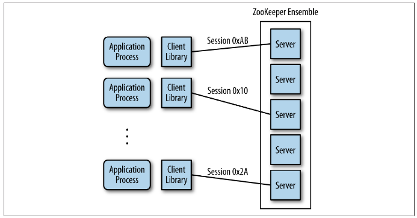
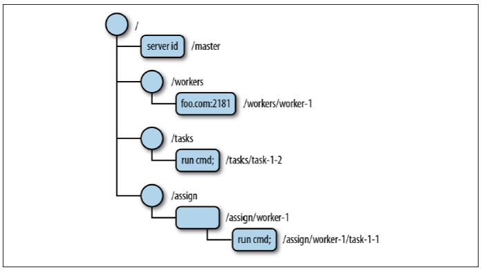

<!DOCTYPE html>


<html lang="zh-Hans">
  

    <head>
      <meta charset="utf-8" />
        
      <meta name="description" content="Technical output and problem solving record" />
      
      <meta
        name="viewport"
        content="width=device-width, initial-scale=1, maximum-scale=1"
      />
      <title>Dubbo-Zookeeper服务治理 |  Tunan`s Blog</title>
  <meta name="generator" content="hexo-theme-ayer">
      
      <link rel="shortcut icon" href="/favicon.ico" />
       
<link rel="stylesheet" href="/dist/main.css">

      <link
        rel="stylesheet"
        href="https://cdn.jsdelivr.net/gh/Shen-Yu/cdn/css/remixicon.min.css"
      />
      
<link rel="stylesheet" href="/css/custom.css">
 
      <script src="https://cdn.jsdelivr.net/npm/pace-js@1.0.2/pace.min.js"></script>
       
 

      <link
        rel="stylesheet"
        href="https://cdn.jsdelivr.net/npm/@sweetalert2/theme-bulma@5.0.1/bulma.min.css"
      />
      <script src="https://cdn.jsdelivr.net/npm/sweetalert2@11.0.19/dist/sweetalert2.min.js"></script>

      <!-- mermaid -->
      
      <style>
        .swal2-styled.swal2-confirm {
          font-size: 1.6rem;
        }
      </style>
    </head>
  </html>
</html>


<body>
  <div id="app">
    
      
    <main class="content on">
      <section class="outer">
  <article
  id="post-Dubbo-Zookeeper服务治理"
  class="article article-type-post"
  itemscope
  itemprop="blogPost"
  data-scroll-reveal
>
  <div class="article-inner">
    
    <header class="article-header">
       
<h1 class="article-title sea-center" style="border-left:0" itemprop="name">
  Dubbo-Zookeeper服务治理
</h1>
 

      
    </header>
     
    <div class="article-meta">
      <a href="/2022/07/04/Dubbo-Zookeeper%E6%9C%8D%E5%8A%A1%E6%B2%BB%E7%90%86/" class="article-date">
  <time datetime="2022-07-04T09:38:37.000Z" itemprop="datePublished">2022-07-04</time>
</a> 
  <div class="article-category">
    <a class="article-category-link" href="/categories/Zookeeper/">Zookeeper</a>
  </div>
  
<div class="word_count">
    <span class="post-time">
        <span class="post-meta-item-icon">
            <i class="ri-quill-pen-line"></i>
            <span class="post-meta-item-text"> Word count:</span>
            <span class="post-count">1.7k</span>
        </span>
    </span>

    <span class="post-time">
        &nbsp; | &nbsp;
        <span class="post-meta-item-icon">
            <i class="ri-book-open-line"></i>
            <span class="post-meta-item-text"> Reading time≈</span>
            <span class="post-count">7 min</span>
        </span>
    </span>
</div>
 
    </div>
      
    <div class="tocbot"></div>


  
    <div class="article-entry" itemprop="articleBody">
       
  <h1 id="Zookeeper介绍"><a href="#Zookeeper介绍" class="headerlink" title="Zookeeper介绍"></a>Zookeeper介绍</h1><h2 id="基本概念"><a href="#基本概念" class="headerlink" title="基本概念"></a>基本概念</h2><p>在现代的分布式应用中，往往会出现节点和节点之间的协调问题，其中就包括了：选主、集群管理、分布式锁、分布式配置管理、统一命名服务、状态同步等诉求。<span id="more"></span></p>
<p>Zookeeper，动物园管理员，其含义就是解决这些诉求的一个分布式协调服务框架</p>
<p>为了保证高可用，ZooKeeper 本身也可以部署成集群模式，称之为 <code>ZooKeeper ensemble</code>。ZooKeeper 集群中始终确保其中的一台为 leader 的角色，并通过 <code>ZAB (Zookeeper Atomic Broadcast Protocol) </code>协议确保所有节点上的信息的一致。客户端可以访问集群中的任何一台进行读写操作，而不用担心数据出现不一致的现象。</p>
<p></p>
<p>Zookeeper 中的数据存储方式与传统的 UNIX 文件系统相似，节点按照树状结构来组织，其中，节点被称之为 <code>znodes (ZooKeeper data nodes)</code></p>
<p></p>
<h2 id="基本用法"><a href="#基本用法" class="headerlink" title="基本用法"></a>基本用法</h2><p>本人项目中选择docker的方式启动Zookeeper，下面进行步骤介绍</p>
<ol>
<li><p>启动Zookeeper</p>
<p>执行命令将 Zookeeper 运行在 docker 容器中</p>
<p><code>docker run --rm --name zookeeper -p 2181:2181 zookeeper</code></p>
</li>
<li><p>进入Zookeeper容器</p>
<p><code>docker exec -it zookeeper bash</code></p>
<p>在 <code>bin</code> 目录下有启动 Zookeeper 的命令 <code>zkServer</code> 以及管理控制台 <code>zkCli</code></p>
<pre><code class="bash">bash-4.4# ls -l bin
total 36
-rwxr-xr-x    1 zookeepe zookeepe       232 Mar 27 04:32 README.txt
-rwxr-xr-x    1 zookeepe zookeepe      1937 Mar 27 04:32 zkCleanup.sh
-rwxr-xr-x    1 zookeepe zookeepe      1056 Mar 27 04:32 zkCli.cmd
-rwxr-xr-x    1 zookeepe zookeepe      1534 Mar 27 04:32 zkCli.sh
-rwxr-xr-x    1 zookeepe zookeepe      1759 Mar 27 04:32 zkEnv.cmd
-rwxr-xr-x    1 zookeepe zookeepe      2696 Mar 27 04:32 zkEnv.sh
-rwxr-xr-x    1 zookeepe zookeepe      1089 Mar 27 04:32 zkServer.cmd
-rwxr-xr-x    1 zookeepe zookeepe      6773 Mar 27 04:32 zkServer.sh
</code></pre>
</li>
<li><p>通过 zkCli 进入 Zookeeper 管理界面</p>
<p>由于是通过 Docker 启动，Zookeeper 进程已经启动，并通过 2181 端口对外提供服务</p>
<p>因此可以直接通过 <code>zkCli</code> 来访问 Zookeeper 的控制台来进行管理。</p>
<pre><code class="bash">bash-4.4# bin/zkCli.sh -server 127.0.0.1:2181
Connecting to 127.0.0.1:2181
...
WATCHER::
</code></pre>
</li>
<li><p>zkCli 上的一些基本操作</p>
<ul>
<li><p>创建 <code>/hello-zone</code> 节点：</p>
<pre><code class="bash">[zk: 127.0.0.1:2181(CONNECTED) 19] create /hello-zone &#39;world&#39;
Created /hello-zone
</code></pre>
</li>
<li><p>列出 <code>/</code> 下的子节点，确认 <code>hello-zone</code> 被创建：</p>
<pre><code class="bash">[zk: 127.0.0.1:2181(CONNECTED) 20] ls /
[zookeeper, hello-zone]
</code></pre>
</li>
<li><p>列出 /hello-zone 的子节点，确认为空：</p>
<pre><code class="bash">[zk: 127.0.0.1:2181(CONNECTED) 21] ls /hello-zone
[]
</code></pre>
</li>
<li><p>获取存储在 <code>/hello-zone</code> 节点上的数据：</p>
<pre><code class="bash">[zk: 127.0.0.1:2181(CONNECTED) 22] get /hello-zone
world
</code></pre>
</li>
</ul>
</li>
</ol>
<h1 id="Zookeeper作为Dubbo的注册中心"><a href="#Zookeeper作为Dubbo的注册中心" class="headerlink" title="Zookeeper作为Dubbo的注册中心"></a>Zookeeper作为Dubbo的注册中心</h1><p>Dubbo 使用 Zookeeper 用于服务的注册发现和配置管理。</p>
<p>首先，所有 Dubbo 相关的数据都组织在 <code>/dubbo</code> 的根节点下。</p>
<p>二级目录是服务名，如 <code>com.foo.BarService</code>。</p>
<p>三级目录有两个子节点，分别是 <code>providers</code> 和 <code>consumers</code>，表示该服务的提供者和消费者。</p>
<p>四级目录记录了与该服务相关的每一个应用实例的 URL 信息，在 <code>providers</code> 下的表示该服务的所有提供者，而在 <code>consumers</code> 下的表示该服务的所有消费者。举例说明，<code>com.foo.BarService</code> 的服务提供者在启动时将自己的 URL 信息注册到 <code>/dubbo/com.foo.BarService/providers</code> 下；同样的，服务消费者将自己的信息注册到相应的 <code>consumers</code> 下，同时，服务消费者会订阅其所对应的 <code>providers</code> 节点，以便能够感知到服务提供方地址列表的变化。</p>
<h2 id="示例代码"><a href="#示例代码" class="headerlink" title="示例代码"></a>示例代码</h2><h3 id="1、接口定义"><a href="#1、接口定义" class="headerlink" title="1、接口定义"></a>1、接口定义</h3><p>定义一个简单的 <code>HelloService</code> 接口，里面只有一个简单的方法 <code>sayHello</code> 向调用者问好。</p>
<pre><code class="java">public interface HelloService &#123;
    String sayHello(String name);
&#125;
</code></pre>
<h3 id="2、服务端：服务实现"><a href="#2、服务端：服务实现" class="headerlink" title="2、服务端：服务实现"></a>2、服务端：服务实现</h3><p>实现 <code>HelloService</code> 接口，并通过 <code>@Service</code> 来标注其为 Dubbo 的一个服务。</p>
<pre><code class="java">@Service
public class AnnotatedHelloService implements HelloService &#123;
    public String sayHello(String name) &#123;
        return &quot;hello, &quot; + name;
    &#125;
&#125;
</code></pre>
<h3 id="3、服务端：组装"><a href="#3、服务端：组装" class="headerlink" title="3、服务端：组装"></a>3、服务端：组装</h3><p>定义 ProviderConfiguration 来组装 Dubbo 服务。</p>
<pre><code class="java">@Configuration
@EnableDubbo(scanBasePackages = &quot;com.alibaba.dubbo.samples.impl&quot;)
@PropertySource(&quot;classpath:/spring/dubbo-provider.properties&quot;)
static class ProviderConfiguration &#123;&#125;
</code></pre>
<p>dubbo-provider.properties 是在 Spring 应用中外置配置的方式，内容如下：</p>
<pre><code class="properties">dubbo.application.name=demo-provider
dubbo.registry.address=zookeeper://$DOCKER_HOST:2181
dubbo.protocol.name=dubbo
dubbo.protocol.port=20880
</code></pre>
<h3 id="4、服务端：启动服务"><a href="#4、服务端：启动服务" class="headerlink" title="4、服务端：启动服务"></a>4、服务端：启动服务</h3><p>在 <code>main</code> 方法中通过启动一个 Spring Context 来对外提供 Dubbo 服务。</p>
<pre><code class="java">public class ProviderBootstrap &#123;
    public static void main(String[] args) throws Exception &#123;
        AnnotationConfigApplicationContext context = new AnnotationConfigApplicationContext(ProviderConfiguration.class);
        context.start();
        System.in.read();
    &#125;
&#125;
</code></pre>
<p>启动服务端的 <code>main</code> 方法，通过 Zookeeper 管理终端观察服务提供方的注册信息：</p>
<pre><code class="bash">$ docker exec -it zookeeper bash
bash-4.4# bin/zkCli.sh -server localhost:218
Connecting to localhost:2181
...
Welcome to ZooKeeper!
JLine support is enabled
...
</code></pre>
<p>可以看到刚刚启动的 Dubbo 的服务在 <code>providers</code> 节点下注册了自己的 URL 地址：<em>dubbo://192.168.99.1:20880/com.alibaba.dubbo.samples.api.GreetingService?anyhost=true&amp;application=demo-provider&amp;dubbo=2.6.2&amp;generic=false&amp;interface=com.alibaba.dubbo.samples.api.HelloService&amp;methods=sayHello&amp;pid=12938&amp;side=provider×tamp=1533264631849</em></p>
<h3 id="5、客户端：引用服务"><a href="#5、客户端：引用服务" class="headerlink" title="5、客户端：引用服务"></a>5、客户端：引用服务</h3><p>通过 <code>@Reference</code> 来在客户端声明服务的引用，运行时将会通过该引用发起全程调用，而服务的目标地址将会从 Zookeeper 的 <code>provider</code> 节点下查询。</p>
<pre><code class="java">@Component(&quot;annotatedConsumer&quot;)
public class HelloServiceConsumer &#123;
    @Reference
    private HelloService helloService;
    
    public String doSayHello(String name) &#123;
        return helloService.sayHello(name);
    &#125;
&#125;
</code></pre>
<h3 id="6、客户端：组装"><a href="#6、客户端：组装" class="headerlink" title="6、客户端：组装"></a>6、客户端：组装</h3><p>定义 ConsumerConfiguration 来组装 Dubbo 服务。</p>
<pre><code class="java">@Configuration
@EnableDubbo(scanBasePackages = &quot;com.alibaba.dubbo.samples.action&quot;)
@PropertySource(&quot;classpath:/spring/dubbo-consumer.properties&quot;)
@ComponentScan(value = &#123;&quot;com.alibaba.dubbo.samples.action&quot;&#125;)
static class ConsumerConfiguration &#123;&#125;
</code></pre>
<p>dubbo-consumer.properties 是在 Spring 应用中外置配置的方式，内容如下：</p>
<pre><code class="properties">dubbo.application.name=demo-consumer
dubbo.registry.address=zookeeper://$DOCKER_HOST:2181
dubbo.consumer.timeout=3000
</code></pre>
<h3 id="7、客户端：发起远程调用"><a href="#7、客户端：发起远程调用" class="headerlink" title="7、客户端：发起远程调用"></a>7、客户端：发起远程调用</h3><p>运行 <code>main</code> 向已经启动的服务提供方发起一次远程调用。Dubbo 会先向 Zookeeper 订阅服务地址，然后从返回的地址列表中选取一个，向对端发起调用：</p>
<pre><code class="java">public class ConsumerBootstrap &#123;
    public static void main(String[] args) &#123;
public class ConsumerBootstrap &#123;

    public static void main(String[] args) throws IOException &#123;
        AnnotationConfigApplicationContext context = new AnnotationConfigApplicationContext(ConsumerConfiguration.class);
        context.start();
        HelloServiceConsumer helloServiceConsumer = context.getBean(HelloServiceConsumer.class);
        String hello = helloServiceConsumer.doSayHello(&quot;zookeeper&quot;);
        System.out.println(&quot;result: &quot; + hello);
        System.in.read();
    &#125;
&#125;
</code></pre>
<p>通过 Zookeeper 管理终端观察服务提供方的注册信息：</p>
<pre><code class="bash">$ docker exec -it zookeeper bash
bash-4.4# bin/zkCli.sh -server localhost:218
Connecting to localhost:2181
...
Welcome to ZooKeeper!
JLine support is enabled
...
</code></pre>
<p>可以看到 Dubbo 的服务消费者在 <code>consumers</code> 节点下注册了自己的 URL 地址：<em>consumer://192.168.99.1/com.alibaba.dubbo.samples.api.HelloService?application=demo-consumer&amp;category=providers,configurators,routers&amp;default.timeout=3000&amp;dubbo=2.6.2&amp;interface=com.alibaba.dubbo.samples.api.HelloService&amp;methods=sayHello&amp;pid=82406&amp;side=consumer×tamp=1533274951195</em></p>
<h1 id="总结"><a href="#总结" class="headerlink" title="总结"></a>总结</h1><p>本文侧重介绍了如何在 Dubbo 应用中使用 Zookeeper 做为注册中心，当然，本文也提到了 Zookeeper 在 Dubbo 的应用场景下还承担了配置中心和服务治理的职责。本文中的 Zookeeper 是单节点、Standalone 的模式，在生产环境中为了高可用的诉求，往往会组件 Zookeeper 集群，也就是 <em>Zookeeper ensemble</em> 模式。</p>
 
      <!-- reward -->
      
    </div>
    

    <!-- copyright -->
    
    <div class="declare">
      <ul class="post-copyright">
        <li>
          <i class="ri-copyright-line"></i>
          <strong>Copyright： </strong>
          
          Copyright is owned by the author. For commercial reprints, please contact the author for authorization. For non-commercial reprints, please indicate the source.
          
        </li>
      </ul>
    </div>
    
    <footer class="article-footer">
       
<div class="share-btn">
      <span class="share-sns share-outer">
        <i class="ri-share-forward-line"></i>
        分享
      </span>
      <div class="share-wrap">
        <i class="arrow"></i>
        <div class="share-icons">
          
          <a class="weibo share-sns" href="javascript:;" data-type="weibo">
            <i class="ri-weibo-fill"></i>
          </a>
          <a class="weixin share-sns wxFab" href="javascript:;" data-type="weixin">
            <i class="ri-wechat-fill"></i>
          </a>
          <a class="qq share-sns" href="javascript:;" data-type="qq">
            <i class="ri-qq-fill"></i>
          </a>
          <a class="douban share-sns" href="javascript:;" data-type="douban">
            <i class="ri-douban-line"></i>
          </a>
          <!-- <a class="qzone share-sns" href="javascript:;" data-type="qzone">
            <i class="icon icon-qzone"></i>
          </a> -->
          
          <a class="facebook share-sns" href="javascript:;" data-type="facebook">
            <i class="ri-facebook-circle-fill"></i>
          </a>
          <a class="twitter share-sns" href="javascript:;" data-type="twitter">
            <i class="ri-twitter-fill"></i>
          </a>
          <a class="google share-sns" href="javascript:;" data-type="google">
            <i class="ri-google-fill"></i>
          </a>
        </div>
      </div>
</div>

<div class="wx-share-modal">
    <a class="modal-close" href="javascript:;"><i class="ri-close-circle-line"></i></a>
    <p>扫一扫，分享到微信</p>
    <div class="wx-qrcode">
      
    </div>
</div>

<div id="share-mask"></div>  
  <ul class="article-tag-list" itemprop="keywords"><li class="article-tag-list-item"><a class="article-tag-list-link" href="/tags/Dubbo/" rel="tag">Dubbo</a></li></ul>

    </footer>
  </div>

   
  <nav class="article-nav">
    
      <a href="/2022/07/12/%E5%85%B3%E4%BA%8EMybatis%E6%8C%81%E4%B9%85%E5%8C%96%E7%9A%84%E6%BC%94%E8%BF%9B%E8%BF%87%E7%A8%8B%E9%98%90%E8%BF%B0/" class="article-nav-link">
        <strong class="article-nav-caption">上一篇</strong>
        <div class="article-nav-title">
          
            关于Mybatis持久化的演进过程阐述
          
        </div>
      </a>
    
    
      <a href="/2022/07/02/07%E4%BA%91%E5%8E%9F%E7%94%9F-DevOps%E4%BD%BF%E7%94%A8/" class="article-nav-link">
        <strong class="article-nav-caption">下一篇</strong>
        <div class="article-nav-title">云原生07--DevOps使用</div>
      </a>
    
  </nav>

   
<!-- valine评论 -->
<div id="vcomments-box">
  <div id="vcomments"></div>
</div>
<script src="//cdn1.lncld.net/static/js/3.0.4/av-min.js"></script>
<script src="https://cdn.jsdelivr.net/npm/valine@1.4.14/dist/Valine.min.js"></script>
<script>
  new Valine({
    el: "#vcomments",
    app_id: "",
    app_key: "",
    path: window.location.pathname,
    avatar: "monsterid",
    placeholder: "给我的文章加点评论吧~",
    recordIP: true,
  });
  const infoEle = document.querySelector("#vcomments .info");
  if (infoEle && infoEle.childNodes && infoEle.childNodes.length > 0) {
    infoEle.childNodes.forEach(function (item) {
      item.parentNode.removeChild(item);
    });
  }
</script>
<style>
  #vcomments-box {
    padding: 5px 30px;
  }

  @media screen and (max-width: 800px) {
    #vcomments-box {
      padding: 5px 0px;
    }
  }

  #vcomments-box #vcomments {
    background-color: #fff;
  }

  .v .vlist .vcard .vh {
    padding-right: 20px;
  }

  .v .vlist .vcard {
    padding-left: 10px;
  }
</style>

 
   
     
</article>

</section>
      <footer class="footer">
  <div class="outer">
    <ul>
      <li>
        Copyrights &copy;
        2018-2022
        <i class="ri-heart-fill heart_icon"></i> Tunan
      </li>
    </ul>
    <ul>
      <li>
        
      </li>
    </ul>
    <ul>
      <li>
        
        
        <span>
  <span><i class="ri-user-3-fill"></i>Visitors:<span id="busuanzi_value_site_uv"></span></span>
  <span class="division">|</span>
  <span><i class="ri-eye-fill"></i>Views:<span id="busuanzi_value_page_pv"></span></span>
</span>
        
      </li>
    </ul>
    <ul>
      
    </ul>
    <ul>
      
    </ul>
    <ul>
      <li>
        <!-- cnzz统计 -->
        
        <script type="text/javascript" src='https://s9.cnzz.com/z_stat.php?id=1278069914&amp;web_id=1278069914'></script>
        
      </li>
    </ul>
  </div>
</footer>    
    </main>
    <div class="float_btns">
      <div class="totop" id="totop">
  <i class="ri-arrow-up-line"></i>
</div>

<div class="todark" id="todark">
  <i class="ri-moon-line"></i>
</div>

    </div>
    <aside class="sidebar on">
      <button class="navbar-toggle"></button>
<nav class="navbar">
  
  <div class="logo">
    <a href="/"></a>
  </div>
  
  <ul class="nav nav-main">
    
    <li class="nav-item">
      <a class="nav-item-link" href="/">主页</a>
    </li>
    
    <li class="nav-item">
      <a class="nav-item-link" href="/archives">归档</a>
    </li>
    
    <li class="nav-item">
      <a class="nav-item-link" href="/categories">分类</a>
    </li>
    
    <li class="nav-item">
      <a class="nav-item-link" href="/tags">标签</a>
    </li>
    
    <li class="nav-item">
      <a class="nav-item-link" href="/tags/share">分享</a>
    </li>
    
    <li class="nav-item">
      <a class="nav-item-link" target="_blank" rel="noopener" href="https://blog.csdn.net/North_City_">CSDN</a>
    </li>
    
  </ul>
</nav>
<nav class="navbar navbar-bottom">
  <ul class="nav">
    <li class="nav-item">
      
      <a class="nav-item-link nav-item-search"  title="Search">
        <i class="ri-search-line"></i>
      </a>
      
      
      <a class="nav-item-link" target="_blank" href="/atom.xml" title="RSS Feed">
        <i class="ri-rss-line"></i>
      </a>
      
    </li>
  </ul>
</nav>
<div class="search-form-wrap">
  <div class="local-search local-search-plugin">
  <input type="search" id="local-search-input" class="local-search-input" placeholder="Search...">
  <div id="local-search-result" class="local-search-result"></div>
</div>
</div>
    </aside>
    <div id="mask"></div>

<!-- #reward -->
<div id="reward">
  <span class="close"><i class="ri-close-line"></i></span>
  <p class="reward-p"><i class="ri-cup-line"></i>请我喝杯咖啡吧~</p>
  <div class="reward-box">
    
    <div class="reward-item">
      
      <span class="reward-type">支付宝</span>
    </div>
    
    
    <div class="reward-item">
      
      <span class="reward-type">微信</span>
    </div>
    
  </div>
</div>
    
<script src="/js/jquery-3.6.0.min.js"></script>
 
<script src="/js/lazyload.min.js"></script>

<!-- Tocbot -->
 
<script src="/js/tocbot.min.js"></script>

<script>
  tocbot.init({
    tocSelector: ".tocbot",
    contentSelector: ".article-entry",
    headingSelector: "h1, h2, h3, h4, h5, h6",
    hasInnerContainers: true,
    scrollSmooth: true,
    scrollContainer: "main",
    positionFixedSelector: ".tocbot",
    positionFixedClass: "is-position-fixed",
    fixedSidebarOffset: "auto",
  });
</script>

<script src="https://cdn.jsdelivr.net/npm/jquery-modal@0.9.2/jquery.modal.min.js"></script>
<link
  rel="stylesheet"
  href="https://cdn.jsdelivr.net/npm/jquery-modal@0.9.2/jquery.modal.min.css"
/>
<script src="https://cdn.jsdelivr.net/npm/justifiedGallery@3.7.0/dist/js/jquery.justifiedGallery.min.js"></script>

<script src="/dist/main.js"></script>

<!-- ImageViewer -->
 <!-- Root element of PhotoSwipe. Must have class pswp. -->
<div class="pswp" tabindex="-1" role="dialog" aria-hidden="true">

    <!-- Background of PhotoSwipe. 
         It's a separate element as animating opacity is faster than rgba(). -->
    <div class="pswp__bg"></div>

    <!-- Slides wrapper with overflow:hidden. -->
    <div class="pswp__scroll-wrap">

        <!-- Container that holds slides. 
            PhotoSwipe keeps only 3 of them in the DOM to save memory.
            Don't modify these 3 pswp__item elements, data is added later on. -->
        <div class="pswp__container">
            <div class="pswp__item"></div>
            <div class="pswp__item"></div>
            <div class="pswp__item"></div>
        </div>

        <!-- Default (PhotoSwipeUI_Default) interface on top of sliding area. Can be changed. -->
        <div class="pswp__ui pswp__ui--hidden">

            <div class="pswp__top-bar">

                <!--  Controls are self-explanatory. Order can be changed. -->

                <div class="pswp__counter"></div>

                <button class="pswp__button pswp__button--close" title="Close (Esc)"></button>

                <button class="pswp__button pswp__button--share" style="display:none" title="Share"></button>

                <button class="pswp__button pswp__button--fs" title="Toggle fullscreen"></button>

                <button class="pswp__button pswp__button--zoom" title="Zoom in/out"></button>

                <!-- Preloader demo http://codepen.io/dimsemenov/pen/yyBWoR -->
                <!-- element will get class pswp__preloader--active when preloader is running -->
                <div class="pswp__preloader">
                    <div class="pswp__preloader__icn">
                        <div class="pswp__preloader__cut">
                            <div class="pswp__preloader__donut"></div>
                        </div>
                    </div>
                </div>
            </div>

            <div class="pswp__share-modal pswp__share-modal--hidden pswp__single-tap">
                <div class="pswp__share-tooltip"></div>
            </div>

            <button class="pswp__button pswp__button--arrow--left" title="Previous (arrow left)">
            </button>

            <button class="pswp__button pswp__button--arrow--right" title="Next (arrow right)">
            </button>

            <div class="pswp__caption">
                <div class="pswp__caption__center"></div>
            </div>

        </div>

    </div>

</div>

<link rel="stylesheet" href="https://cdn.jsdelivr.net/npm/photoswipe@4.1.3/dist/photoswipe.min.css">
<link rel="stylesheet" href="https://cdn.jsdelivr.net/npm/photoswipe@4.1.3/dist/default-skin/default-skin.min.css">
<script src="https://cdn.jsdelivr.net/npm/photoswipe@4.1.3/dist/photoswipe.min.js"></script>
<script src="https://cdn.jsdelivr.net/npm/photoswipe@4.1.3/dist/photoswipe-ui-default.min.js"></script>

<script>
    function viewer_init() {
        let pswpElement = document.querySelectorAll('.pswp')[0];
        let $imgArr = document.querySelectorAll(('.article-entry img:not(.reward-img)'))

        $imgArr.forEach(($em, i) => {
            $em.onclick = () => {
                // slider展开状态
                // todo: 这样不好，后面改成状态
                if (document.querySelector('.left-col.show')) return
                let items = []
                $imgArr.forEach(($em2, i2) => {
                    let img = $em2.getAttribute('data-idx', i2)
                    let src = $em2.getAttribute('data-target') || $em2.getAttribute('src')
                    let title = $em2.getAttribute('alt')
                    // 获得原图尺寸
                    const image = new Image()
                    image.src = src
                    items.push({
                        src: src,
                        w: image.width || $em2.width,
                        h: image.height || $em2.height,
                        title: title
                    })
                })
                var gallery = new PhotoSwipe(pswpElement, PhotoSwipeUI_Default, items, {
                    index: parseInt(i)
                });
                gallery.init()
            }
        })
    }
    viewer_init()
</script> 
<!-- MathJax -->

<!-- Katex -->

<!-- busuanzi  -->
 
<script src="/js/busuanzi-2.3.pure.min.js"></script>
 
<!-- ClickLove -->

<!-- ClickBoom1 -->

<!-- ClickBoom2 -->

<!-- CodeCopy -->
 
<link rel="stylesheet" href="/css/clipboard.css">
 <script src="https://cdn.jsdelivr.net/npm/clipboard@2/dist/clipboard.min.js"></script>
<script>
  function wait(callback, seconds) {
    var timelag = null;
    timelag = window.setTimeout(callback, seconds);
  }
  !function (e, t, a) {
    var initCopyCode = function(){
      var copyHtml = '';
      copyHtml += '<button class="btn-copy" data-clipboard-snippet="">';
      copyHtml += '<i class="ri-file-copy-2-line"></i><span>COPY</span>';
      copyHtml += '</button>';
      $(".highlight .code pre").before(copyHtml);
      $(".article pre code").before(copyHtml);
      var clipboard = new ClipboardJS('.btn-copy', {
        target: function(trigger) {
          return trigger.nextElementSibling;
        }
      });
      clipboard.on('success', function(e) {
        let $btn = $(e.trigger);
        $btn.addClass('copied');
        let $icon = $($btn.find('i'));
        $icon.removeClass('ri-file-copy-2-line');
        $icon.addClass('ri-checkbox-circle-line');
        let $span = $($btn.find('span'));
        $span[0].innerText = 'COPIED';
        
        wait(function () { // 等待两秒钟后恢复
          $icon.removeClass('ri-checkbox-circle-line');
          $icon.addClass('ri-file-copy-2-line');
          $span[0].innerText = 'COPY';
        }, 2000);
      });
      clipboard.on('error', function(e) {
        e.clearSelection();
        let $btn = $(e.trigger);
        $btn.addClass('copy-failed');
        let $icon = $($btn.find('i'));
        $icon.removeClass('ri-file-copy-2-line');
        $icon.addClass('ri-time-line');
        let $span = $($btn.find('span'));
        $span[0].innerText = 'COPY FAILED';
        
        wait(function () { // 等待两秒钟后恢复
          $icon.removeClass('ri-time-line');
          $icon.addClass('ri-file-copy-2-line');
          $span[0].innerText = 'COPY';
        }, 2000);
      });
    }
    initCopyCode();
  }(window, document);
</script>
 
<!-- CanvasBackground -->

<script>
  if (window.mermaid) {
    mermaid.initialize({ theme: "forest" });
  }
</script>


    
    

  </div>
</body>

</html>